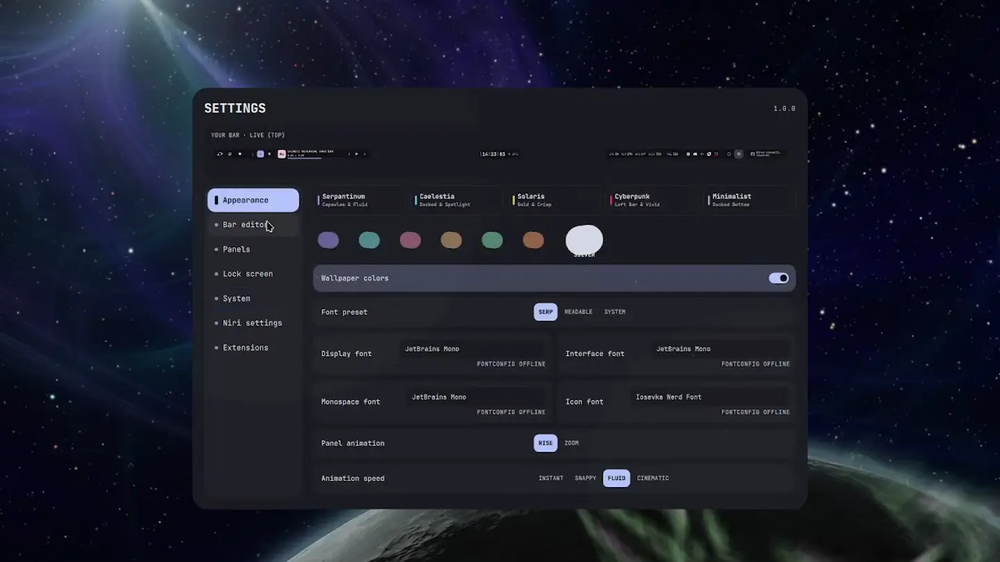

← THE INSTRUMENT DECK02 / 05
Ephemeris
Room for the things that need it.
Search, settings, calendar, and focused instruments that open when you need them.

TOOLS ON DEMANDFindSearch applications, actions, settings, and shell tools.
InspectGive calendar, weather, audio, and system details room to breathe.
FocusOne instrument at a time, with a clear way back.
INSIDE EPHEMERISA place for
Explore the source A place for
the details.
Name-first search
The command palette prioritizes application names and keeps selection stable when results refresh.
Your settings
Adjust appearance, motion, bar layouts, supported Niri settings, and Umbra behavior.
Everyday instruments
Open calendar, weather, clipboard, notifications, power, network, audio, and capture tools.
Display aware
The instrument host reserves space for Aperture and opens on the output where you clicked.
PUT IT TO WORK
Open a little more space.
After installing, open an instrument from Aperture, the launcher, or your terminal.
Get Tonantzintlablackhole open settings blackhole open calendar